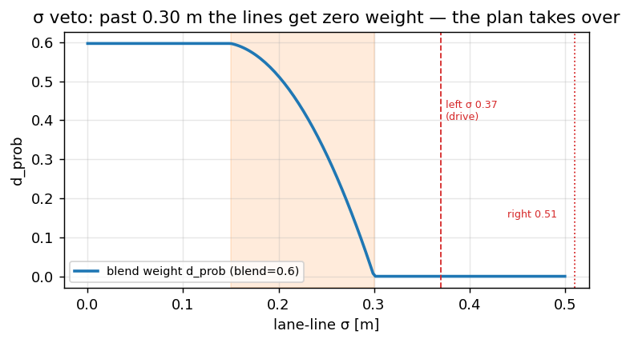

Lane path — from two lines and a plan to one reference#
The planner does not steer toward lane lines, and it does not steer toward the model’s driving plan. It
steers toward one polyline on vision/path, and that polyline is a fusion of both, computed every
vision frame in laneLinesToPath (utils/lane_path.cpp, Python mirror core/path_fusion.py). This
chapter is that fusion: what goes in, how the weight is decided, and the two failure modes it exists to
survive. It is the last thing that happens before the controllers, and where roughly
half of this project’s measured off-centre error is decided.
The two sources, and why neither is enough#
source |
where it comes from |
strength |
failure mode |
|---|---|---|---|
lane lines |
|
the geometric centre of this lane |
one line vanishes; σ blows up in arcs and rain |
model plan |
|
always present, always smooth |
cuts inside arcs — a systematic setpoint offset |
Lines are right when they exist and lie when they don’t. The plan always exists and is always a little wrong on bends. Fusing them is not belt-and-braces; it is using each exactly where the other fails.
Reading the lines: what “near left” means#
Supercombo emits four lane lines; the stack uses the two host-lane ones, lanes[1] and lanes[2],
sampled on the same longitudinal grid as the plan (lanes(1).y_size() == nx is the guard in
lane_path.cpp — a line on a different grid is treated as absent, not resampled). Each line carries a
probability and a per-point standard deviation; the fusion reduces the σ curve to one number, the
median over the near field, because that is the range the controller actually acts on.
import numpy as np
def line_std(y_std, x, lo=5.0, hi=40.0):
"""One confidence number per line: median σ over the range the controller uses."""
sel = (x >= lo) & (x <= hi)
return float(np.median(y_std[sel])) if sel.any() else float("nan")
x = np.arange(0.0, 60.0, 2.0)
sigma_near = 0.05 + 0.01 * x # grows with range, as real lane σ does
print(f"median σ over 5-40 m: {line_std(sigma_near, x):.2f} m")
Two gates and a weight#
A line earns its way into the reference through two independent tests, then contributes by weight:
probability, softened so a line just above threshold does not slam to full weight:
def soft_prob(p, min_p=0.3):
if p < min_p:
return 0.0
return min(1.0, (p - min_p) / max(1e-3, 1.0 - min_p))
σ-confidence — full weight up to
lane_std_good_m(0.15 m), fading linearly to zero atlane_std_bad_m(0.30 m). These are comma’s ownlaneLineStdsbands; below 0.15 m the model is as sure as it ever gets, above 0.30 m it is guessing:
def std_conf(median_std, good=0.15, bad=0.30):
if median_std < 0:
return 1.0
if median_std <= good:
return 1.0
if median_std >= bad:
return 0.0
return (bad - median_std) / (bad - good)
width — the pair is trusted (anchored) only when both lines pass and their median separation sits in [2.6, 4.6] m. A tar seam or a merge lane usually breaks the width, so this one cheap check rejects the most common confident-but-wrong input.
The fusion, and the one knob that matters#
Anchored, the lane centre is the probability-weighted midpoint of the two lines (each pushed inward by
half the measured width), and the blend weight is a flowpilot-style OR of the two probabilities scaled
by path_lane_blend_scale:
def blend_reference(x, y_plan, y_L, y_R, p_L, p_R,
std_L=0.1, std_R=0.1, blend_scale=0.6,
w_min=2.6, w_max=4.6):
"""Fuse lines and plan into one y(x). Device frame, y right-positive."""
p_L = soft_prob(p_L) * std_conf(std_L)
p_R = soft_prob(p_R) * std_conf(std_R)
sel = (x >= 5.0) & (x <= 40.0)
w_med = float(np.mean(np.abs(y_R[sel] - y_L[sel]))) if sel.any() else 0.0
anchored = (w_min < w_med < w_max) and p_L > 0 and p_R > 0
d_prob = (p_L + p_R - p_L * p_R) * blend_scale if anchored else 0.0
w = np.clip(np.abs(y_L - y_R), w_min, w_max)
y_lane = (p_L * (y_L + 0.5 * w) + p_R * (y_R - 0.5 * w)) / (p_L + p_R + 1e-6)
return d_prob * y_lane + (1.0 - d_prob) * y_plan, d_prob, anchored
# The plan cuts 40 cm inside by 40 m; the paint is centred.
x = np.linspace(0, 40, 21)
y_plan = -0.40 * (x / 40.0)
y_L, y_R = -1.75 * np.ones_like(x), 1.75 * np.ones_like(x)
for scale in (0.0, 0.6, 1.0):
y, d, ok = blend_reference(x, y_plan, y_L, y_R, 0.95, 0.95, blend_scale=scale)
print(f"blend={scale:.1f} anchored={ok} d_prob={d:.2f} y(40)={y[-1]:+.3f} m")
blend=0 rides the cutting plan to −0.40 m; blend=1 sits on the centred paint; the shipped 0.6
keeps 40 % of the plan’s inward cut even with perfect lines. That is deliberate: comma-two trusts paint
fully when d_prob≈1, but on this phone the lines are rarely that good, so a partial blend is the
honest compromise.

Fig. 16 On an arc the model plan cuts inside; the paint sits on the true centre. blend=0 rides the plan,
blend=1 the paint, and the shipped 0.6 keeps 40 % of the cut.#
{kind=link}

Fig. 17 The blend weight as σ grows: past lane_std_bad_m (0.30 m) the lines carry zero weight, and the drive’s
0.37 / 0.51 m sit beyond it.#
Why this is where the offset lives#
Two measured facts make this chapter matter more than its size suggests. On the 2026-08-21 drive the
median σ was 0.37 m left and 0.51 m right — both already past the 0.30 m zero-weight edge — and both
lines cleared their gates at once in only ~22 % of frames. So most of the time d_prob collapses toward
zero and the reference is the plan, inheriting its inward cut. That σ veto is credited with about half
the off-centre offset on arcs (open task #39); raising path_lane_blend_scale does nothing while σ sits
in the bad band, because the weight is already zero.
for sig in (0.12, 0.20, 0.37, 0.55):
_, d, _ = blend_reference(x, y_plan, y_L, y_R, 0.95, 0.95,
std_L=sig, std_R=sig, blend_scale=0.6)
print(f"σ={sig:.2f} m → d_prob={d:.2f} ({'lines help' if d > 0.05 else 'plan only'})")
After the fusion, one constant shift is applied — path_camera_offset_m (0.05 m), the residue of the
camera not sitting on the centreline. On straights the remaining offset is 3.6 cm; on arcs it is an
order of magnitude larger, and that is the plan cut showing through a collapsed blend, not a calibration
error.
Acceptance#
the blend sweep reproduces:
blend=0follows the plan,blend=1the paint,blend=0.6between;the σ sweep shows
d_probgoing to zero once σ passes 0.30 m — so you can state, with the drive’s 0.37/0.51 m, why the lines usually do not participate;one sentence connecting the ~22 % both-confident fraction to the arc offset.
For depth#
Vision — Overview — where the σ and the plan come from, and the four conditions a reference must satisfy.
MPC and fp — the controllers that consume this polyline.
utils/lane_path.cppandcore/path_fusion.py— the shipped fusion and its offline mirror.
Next: MPC as a toy